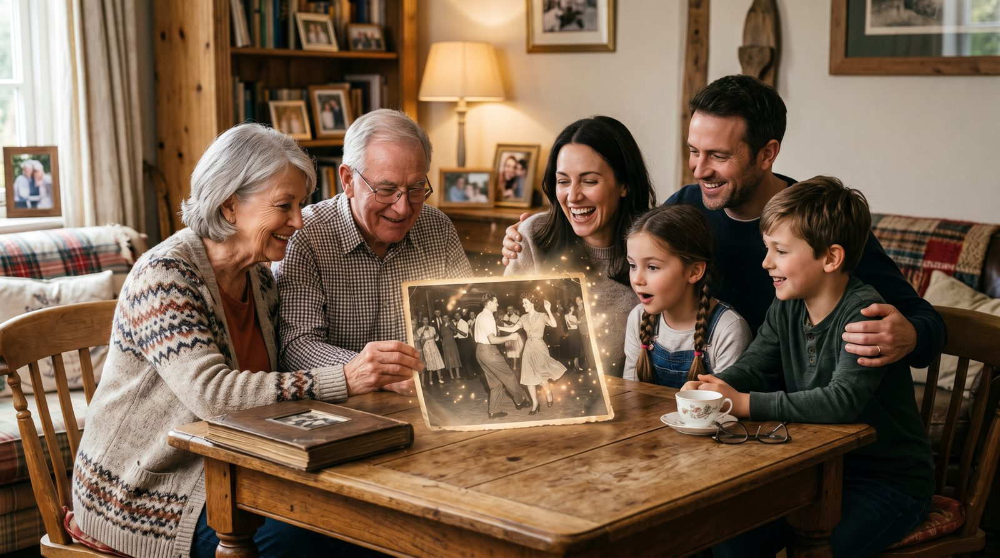

Вы когда-нибудь задумывались, как было бы увидеть старые фотографии в движении? Это возможно с помощью современных технологий, которые позволяют оживить воспоминания и создать видео из старого снимка. Рассмотрим, как сделать это легко и быстро!
Оживление старых фотографий может стать настоящим подарком для близких и друзей. Представьте, как приятно будет увидеть любимого человека в движении, особенно если это фото из семейного архива. Это отличный способ оживить воспоминания и сделать их более реальными.
Кроме того, такие видео могут стать уникальным подарком на день рождения или юбилей. Оживленное фото дедушки или бабушки станет трогательным сюрпризом и напомнит о значимых моментах жизни. Для детей это может стать интересным способом познакомиться с историей своей семьи.
Чтобы создать качественное видео, важно правильно выбрать фото. Лучше всего подходят снимки анфас, где человек смотрит прямо в камеру. Обратите внимание на резкость изображения; чем четче фото, тем лучше будет результат.
Если у вас есть старые или поврежденные снимки, не стоит отчаиваться. Можно использовать фото с одним главным лицом, чтобы фокусировать внимание на нем. В крайнем случае, воспользуйтесь программами для восстановления или улучшения качества изображения перед загрузкой.
Сервис VideoAI позволяет легко и быстро создать видео из старого снимка. Вам не потребуется регистрация. Просто зайдите на сайт botisk.ru и загрузите выбранное фото. Следуйте подсказкам для задания направления движения изображению.
Процесс занимает около 60 секунд, а первое видео вы получите бесплатно. Это идеальная возможность протестировать сервис и оценить качество результата без дополнительных затрат.
| Способ | Время | Цена | Результат |
|---|---|---|---|
| VideoAI | ~60 сек | От 290 р за 10 видео | Высокое качество |
| Студия | 1-2 дня | От 1500 р | Профессионально |
| Фрилансер | 1-3 дня | От 1000 р | Зависит от опыта |
| Зарубежные сервисы | 2-3 часа | От $10 за видео | Часто не поддерживают РФ карты |
Если вы хотите узнать больше о том, как оживить старое фото, посетите наши статьи как оживить старое фото и оживить фото дедушки.
Без регистрации. Первое видео — бесплатно. Загрузите снимок — получите живое видео за 60 секунд.
Создать видео из фото →Лучше всего использовать фотографии в формате JPEG или PNG с четким изображением лица.
Рекомендуется использовать фото с одним главным лицом для достижения наилучшего результата.
Первое видео бесплатно. Далее стоимость начинается от 290 рублей за 10 видео.
Видео сохраняется на платформе в течение 30 дней, после чего его можно удалить или загрузить на свой компьютер.